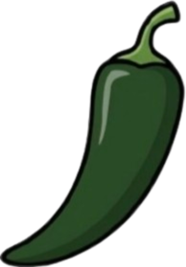
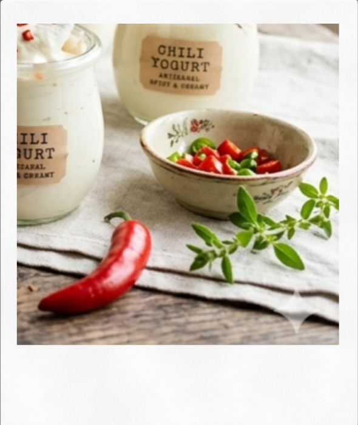
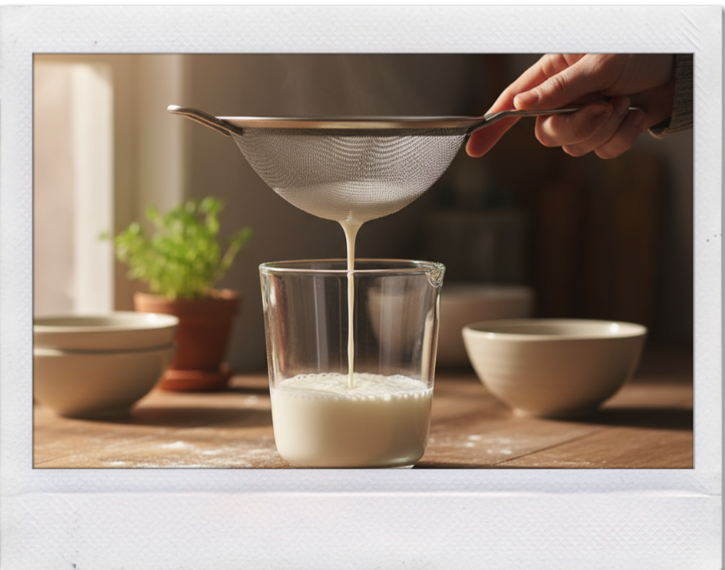
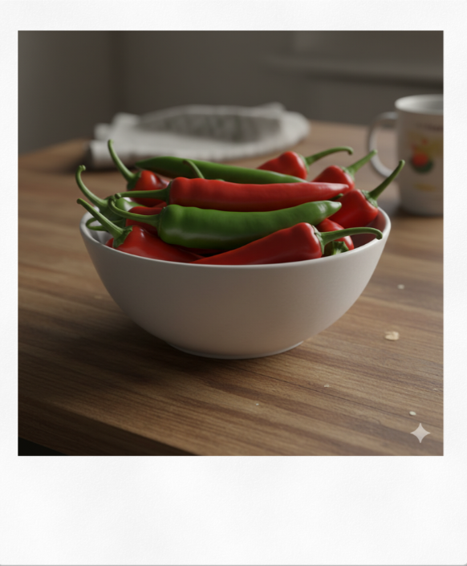
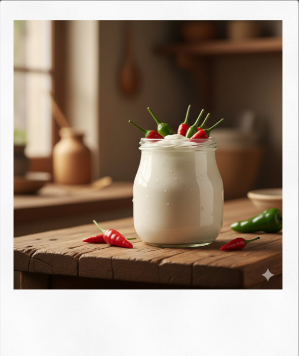
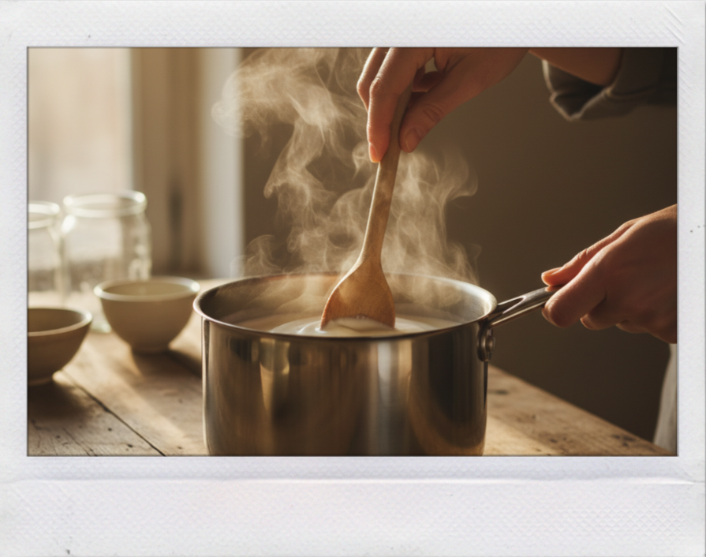
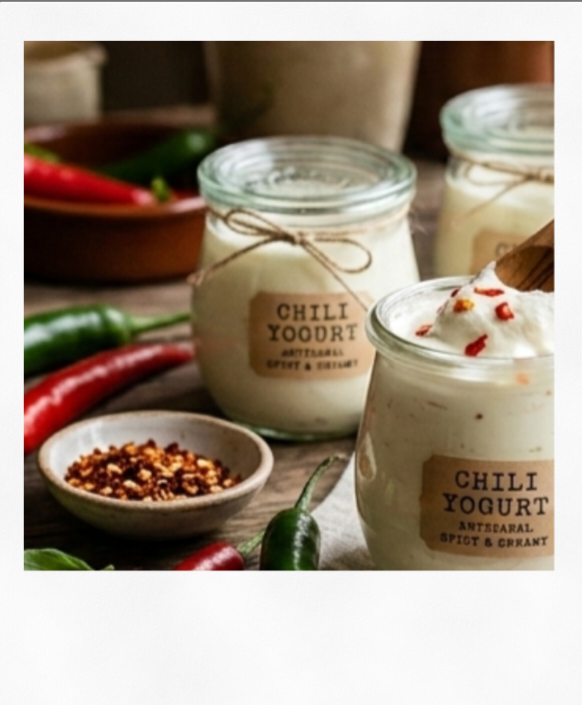

Chilli Lab
Chilli Lab
Chilli Lab
Chilli Lab

Yoghurt ini merupakan produk susu fermentasi yang dibuat menggunakan cabai sebagai starter alami. Pada permukaan cabai terdapat berbagai mikroorganisme, termasuk bakteri asam laktat yang dapat memulai proses fermentasi. Bakteri ini mengubah laktosa dalam susu menjadi asam laktat sehingga susu mengental dan menghasilkan rasa asam khas yoghurt.
Penggunaan cabai sebagai starter memberikan pendekatan yang berbeda dibandingkan yoghurt konvensional yang biasanya menggunakan kultur bakteri komersial. Pada tahap awal fermentasi, aroma cabai mungkin sedikit tercium, namun aroma tersebut akan berkurang seiring berlangsungnya proses fermentasi. Produk akhir tetap memiliki tekstur lembut dan rasa asam segar seperti yoghurt pada umumnya.
Inovasi ini menunjukkan bahwa bahan alami seperti cabai dapat dimanfaatkan sebagai alternatif starter fermentasi. Selain memberikan karakter yang unik, penggunaan bahan alami juga membuka peluang untuk pengembangan produk fermentasi yang lebih kreatif dan beragam.





